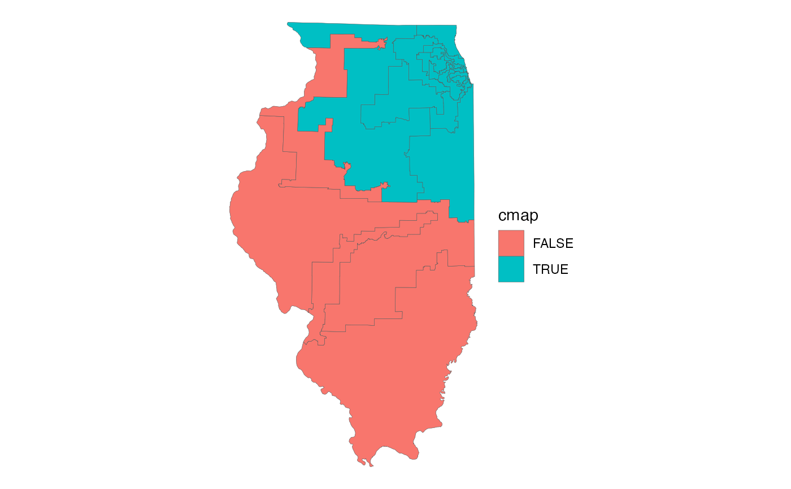

The United States Congressional Districts in the state of Illinois. From the US Census Bureau's TIGER/Line shapefiles, 2019 vintage.
congress_sf
A multipolygon sf object with 18 rows and 6
variables:
Congressional District number. Integer.
Name of the district (full). Character.
Name of the district (short). Character.
Does the district overlap the 7-county CMAP region? Logical.
Area in square miles. Double.
Feature geometry. sf multipolygon.
US Census Bureau TIGER/Line
Census Bureau description:
"Congressional Districts are the 435 areas from which people are elected to the U.S. House of Representatives. After the apportionment of congressional seats among the states based on decennial census population counts, each state with multiple seats is responsible for establishing congressional districts for the purpose of electing representatives. Each congressional district is to be as equal in population to all other congressional districts in a state as practicable. For the District of Columbia, Puerto Rico, and each Island Area, a separate code is used to identify the entire areas of these state-equivalent entities as having a single nonvoting delegate."
# Display the Congressional Districts with ggplot2 library(ggplot2) ggplot(data = congress_sf) + geom_sf(aes(fill = cmap), lwd = 0.1) + theme_void()